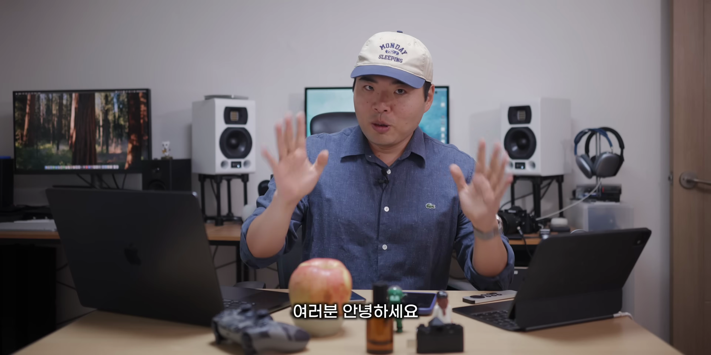
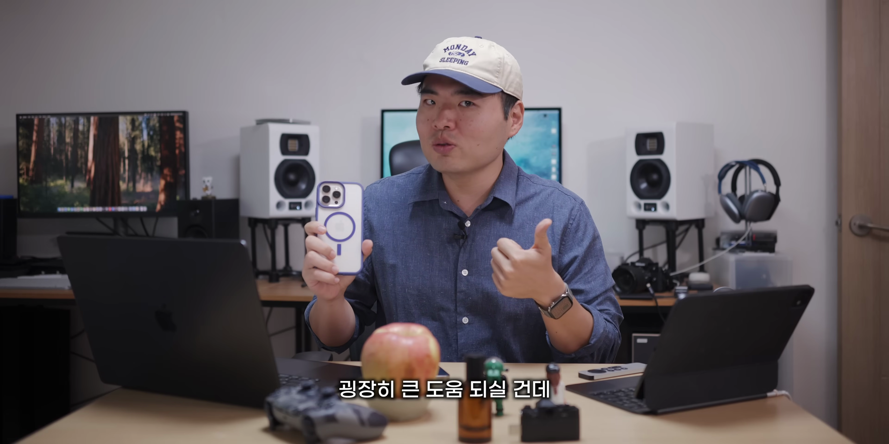
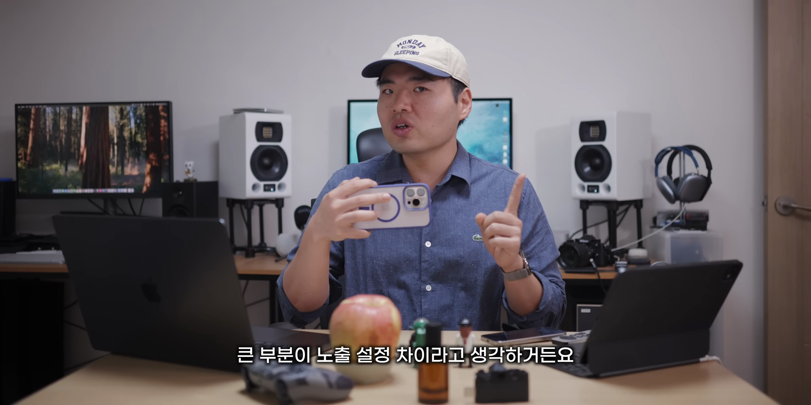
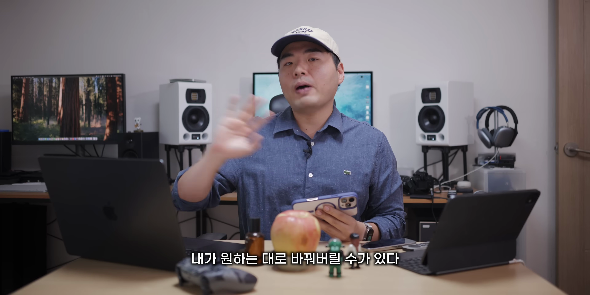
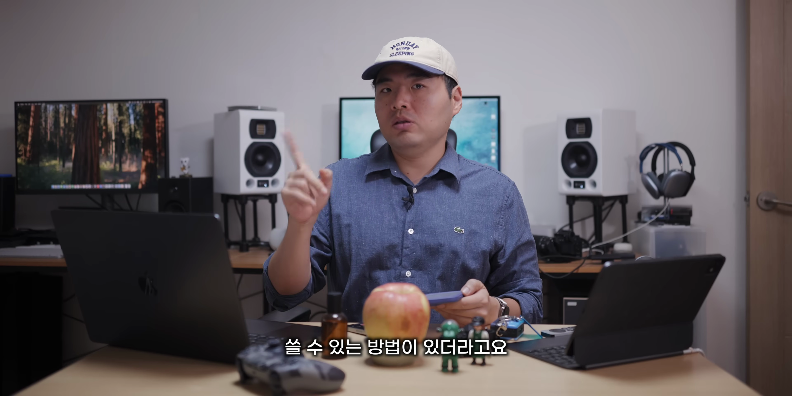

아이폰 16 시리즈는 뛰어난 카메라 기능으로 사진과 동영상 촬영의 새로운 가능성을 제공합니다. 이번 포스팅에서는 아이폰 16의 카메라를 활용하기 위한 다양한 팁과 기능을 소개하여, 여러분이 멋진 사진과 영상을 찍을 수 있도록 돕겠습니다. 
아이폰 16 카메라 기본 설정
- 아이폰 16 Pro Max 모델 사용
- 카메라를 빠르게 켜는 방법
아이폰 16 Pro Max의 카메라를 켜는 방법을 알아보세요. 오른쪽 하단 버튼을 눌러 켜거나, 엣지를 밀어서 카메라를 실행하세요.

사진 촬영의 기초
- 촬영 버튼 누르기
- 노출 설정 조정
촬영 버튼을 눌러 사진을 찍은 후, 노출 설정을 조정하여 원하는 효과를 얻을 수 있습니다.

노출 설정의 중요성
- 노출값 자동 조정
- 수동 조정 방법
아이폰은 장면을 분석하여 적절한 노출값을 제공합니다. 하지만 사용자가 원하는 의도를 반영하기 위해서는 수동 조정이 필요합니다.
어두운 환경에서의 촬영
- 어두운 대상을 찍을 때의 설정 조정
- 조명 개선 방법
어두운 환경에서는 노출 보정을 통해 사진을 밝게 촬영할 수 있습니다. 상황에 맞는 설정을 통해 최상의 결과를 얻으세요.

포토 스타일의 활용
- 사진 색감 조정
- 사용자 지정 스타일 설정
새로운 포토 스타일 기능을 사용하여 사진의 색감을 조정하고 개인화된 스타일을 만들어 보세요.

시네마틱 모드 활용법
- 대상 부각 촬영
- 배경 흐림 효과 조정
시네마틱 모드를 활성화하여 촬영 중 대상을 부각시키고, 배경 흐림 효과를 통해 더욱 브이로그 느낌을 낼 수 있습니다.

전문적인 비디오 편집
- 프로레스 및 로그 포맷 사용
- 고화질 편집 기술
비디오 촬영 시 프로레스 포맷을 사용하여 더욱 풍부한 이미지 데이터를 확보하고, 후반 작업에서 유리한 이점을 누리세요.
Tags: #아이폰 16 #아이폰 16 Pro Max #카메라 #영상 촬영 #사진 촬영 #노출 설정 #포토 스타일 #시네마틱 모드 #프로레스 #로그 포맷